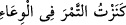
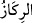
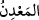
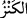

giydiren ve benzeri iyilikler yapan kimselere kadar ulaşır. Onlar, kendilerine yardım
eden bu kimselerin ellerinden tutarlar, Allah’ın emri ile cennete girerler.
Tarihçiler der ki: Kârûn’un ilk başkaldırması ve isyânı, Allah’ın Mûsâ (a.s.)’a şunu
vahyettiği zaman oldu: “İsrâiloğullarına emret; üst elbiselerine dört yeşil ip taksınlar,
iplerin ucu gök renginde olsun.”
Mûsâ (a.s.) dedi ki: “Ya Rabbi, bunun hikmeti nedir?” Allah Teâlâ buyurdu ki: “Onu
gördüklerinde, benim kelâmımın gökten indiğini hatırlasınlar; benden kelâmımdan ve
onunla amel etmekten gâfil olmasınlar.” Mûsâ (a.s.) dedi ki: “Onlara, elbiselerinin her
tarafını yeşile kaplamalarını emretmez misin? Çünkü onlar bu ipleri küçük görürler.”
Buna karşılık Allah Teâlâ buyurdu ki: “Benim emrimin küçüğü, küçük değildir. Onlar
emrimin küçüğünde itâat etmezlerse, büyüğünde hiç itâat etmezler.” Bunun üzerine
Mûsâ (a.s.) kavmine emretti, onlar da yaptılar. Kârûn ise bu emre uymaktan kaçındı. Ve
dedi ki: “Bunu, efendiler, kölelerini diğerlerinden ayırmak için yapar.”
İşte onun ilk başkaldırması ve isyanı bu hâdise oldu. İsrâiloğulları Kızıldeniz’i
geçince, kurban kesme reisliği Hârûn’a verildi.
Keşfü’l-esrâr’da der ki: İsrailoğulları, ibâdet kasdıyla kurban kestiklerinde onu
Harun’un yanına götürürlerdi. Harun kurbanı mezbahanın üzerine kordu. Gökten bir ateş
iner ve onu alırdı.
Kârûn, Hârûn’a hased edip dedi ki: “Ey Mûsâ, peygamberlik senin, kurban kesme
reisliği de Hârûn’un. İsrâiloğullarına Tevrât’ı okuttuğum halde bana bir şey yok. Ben
buna sabredemem.” Mûsâ (a.s.) dedi ki: “Kurban kesme reisliğini Hârûn’a ben
vermedim; Allah fazlından o işi ona verdi.” Kârûn dedi ki: “Vallahi, buna delâlet eden
bir âyet bana göstermedikçe, bu konuda seni tasdik etmeyeceğim.”
Bunun üzerine Mûsâ (a.s.) İsrâiloğullarının reislerine, asâlarını, Allah’a ibâdet
ettikleri ve vahyin nazil olduğu kubbeye koymalarını emretti. Onlar da Mûsâ (a.s.)’ın
dediğini yaptılar ve geceleyin orada beklediler. Sabah olunca bir de baktılar ki
Hârun’un asâsı, -ki o badem ağacından idi- yeşil yapraklar çıkarmış; Kârûn, bu
hârikulâde olayı görünce; “Allah’a yemin olsun ki, bu, sihirden daha hayret edilecek bir
şey değildir.” dedi ve Mûsâ (a.s.)’dan ayrıldı. İsrâiloğullarından bir grup da onun peşi
sıra gitti.
Aralarında akrabalık bağı olduğu için Mûsâ (a.s.), Karûn’u idâre edip onu güzel
sözlerle ikna etmeye çalışıyordu. O ise ona hiç aldırmıyor, eziyet ediyor ve günden güne
de ona olan zorbalığı artıyordu.
“Biz ona” yâni Kârûn’a “öyle hazineler” yâni biriktirilmiş mallar “vermiştik ki,”
Râğıb İsfahânî der ki:
“ ; malı birbiri üzerine yığmak, depo edip saklamak ve muhâfaza etmektir. Meselâ,
; malı birbiri üzerine yığmak, depo edip saklamak ve muhâfaza etmektir. Meselâ,
Arpaça’da “ (hurmayı kapta muhâfaza ettim)” denir ve “kenz”
kelimesinin anlamı buradan gelir. “ (gömülü mal)”, “ (maden)” ve “(hazine)” arasında fark şudur: “ Yer altında tabii olarak bulunan, yahut sonradan